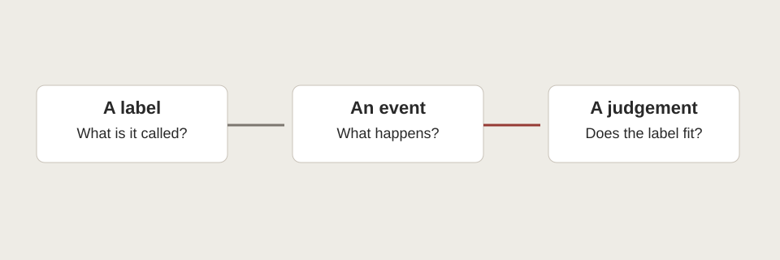

Ch. 1
- Characters
- Jonas and family
- Technique
- Self-correction and controlled diction
- Interpretation
- Careful naming looks reasonable but also makes conformity part of private thought.
A HUSKYDADDY NOVEL STUDY
Can words be precise and still conceal the truth?
KEY IDEA
Test a word against what actually happens.
Careful language can clarify experience, but an accepted label can also prevent questioning.
Can words be precise and still conceal the truth?
Language is a topic; a theme statement explains how words affect thought, relationships, or power. Clear expression can support understanding, so precision is not inherently the enemy. The stronger question is whether approved vocabulary helps people test reality or prevents them from naming experience that would challenge accepted explanations.
Full-novel analysis is hidden. Choose “Full novel” above when you are ready. Chapter-by-chapter notes remain available in the reading guide.

Evidence note: Novel events below are paraphrased. Chapter numbers locate the relevant events; use page numbers from your own edition in formal MLA writing. Interpretations are arguments to test, not verified statements of authorial intention.
Jonas begins by carefully selecting a word for a feeling. Later, permission to lie unsettles the apparent equality of truthfulness. Love exposes limits in the approved vocabulary; the recording finally reveals what release has concealed.
Jonas corrects his description of his feelings before presenting them to his family. Limited narration makes the process available inside his thinking rather than showing only an adult reprimand. Careful naming may genuinely help distinguish fear from anticipation.
At the same time, an approved way of describing experience has become a habit of self-evaluation. The opening therefore establishes a productive tension: language can sharpen awareness while also teaching someone which forms of expression count as acceptable.
Permission to lie is disturbing because it contradicts what Jonas thought everyone shared. The irony is that following his new instructions now makes him question other instructions. A direct question cannot guarantee certainty if the person answering might also have permission.
Internal questioning reveals his development from obedience toward evaluating the conditions under which speech can be trusted. The problem is unequal knowledge of rules, not merely the possibility that one person might tell a falsehood.
The parents’ correction of love comes after Jonas has experienced the feeling in memory. Juxtaposition allows readers to compare the experience with the narrower account offered at home. Their response does not investigate what he means; it redirects him toward more familiar terms.
Precision becomes restrictive when it excludes a meaningful category in advance. This differs from helping someone choose an accurate description: it controls which experiences the conversation is prepared to recognize at all.
Release is a euphemism whose familiar use conceals a lethal practice. The recording supplies evidence that the term alone did not provide, while Father’s gentle manner creates irony. Jonas’s earlier memories allow him to recognize death; vocabulary changes meaning because experience gives him a basis for judgement.
Readers must also distinguish a manipulative institutional effect from proof that every speaker deliberately deceives. The novel’s restricted viewpoint makes Father’s full interior understanding less certain than the act he performs.
Words do not possess power independently of people’s knowledge and institutions. Calling release misleading identifies a real effect, but changing the label alone would not necessarily change the practice. Likewise, Jonas’s careful opening distinction is not automatically oppressive.
A qualified interpretation asks when precision increases understanding, when it narrows inquiry, and who has enough access to evidence to recognize the difference. This keeps analysis from turning into the unsupported slogan that language is always a lie.
Read across to compare; use stacked rows for a closer view.
| Moment | Characters | Technique | Interpretation |
|---|---|---|---|
| Ch. 1 | Jonas and family | Self-correction and controlled diction | Careful naming looks reasonable but also makes conformity part of private thought. |
| Ch. 9 | Jonas | Irony and internal questioning | A rule permitting lies undermines his trust in other rules and speakers. |
| Ch. 16 | Jonas and parents | Dialogue and contrast | Correcting love as imprecise narrows what the family can recognize. |
| Ch. 19 | Jonas, Father, Giver | Euphemism and revelation | The gap between a gentle term and a lethal action becomes impossible for Jonas to ignore. |
Lowry shows how accepted language can make harm difficult to recognize when people lack the experience needed to test it. Release first appears within familiar announcements and ceremonies, giving the practice an ordinary place in communal life. In Chapter 19, Jonas watches his father kill the smaller twin and finally connects the term with an action he understands as death. The gradual revelation transforms earlier vocabulary without changing the word itself. Father’s gentle manner intensifies the irony: a reassuring style accompanies an act that horrifies Jonas. This contrast does not prove that the narration gives access to Father’s complete intentions. It does show how official procedure can separate comforting descriptions from consequences. Jonas’s memories become a resource for judging that gap, making language a problem of knowledge as well as wording. The scene therefore supports an argument that truthful communication requires opportunities to question descriptions against evidence, rather than confidence that familiar or precise-sounding terms must already represent reality adequately.
Read its construction: The opening makes a claim. Specific chapter events provide evidence. The explanation connects narrative choices with consequences. The ending returns to the qualified argument rather than merely announcing that the evidence proves it. Page citations must come from your edition.
Suggested responses · display feature only, not secure access control.
Choose an approved word. Describe its ordinary use, then a moment that challenges it. Explain how the reader’s changed understanding supports your claim.
Does the community misuse language deliberately, or does its restricted knowledge also limit its speakers? Make a qualified argument.
Develop a sustained argument using at least three moments. Make one paragraph address a plausible complication rather than ignoring it.
Accuracy can help reflection; the problem appears when approved categories prevent examination of meaningful experience.
The practice is explicit, but complete knowledge of each speaker’s intentions is not. Distinguish misleading effect from proven deliberate deception.
Related themes: Individuality and Sameness, Freedom, Choice, and Control. Return to Characters and Relationships, Conflicts, and Style and Techniques to test how the evidence supports your reading. These links contain full-novel material.